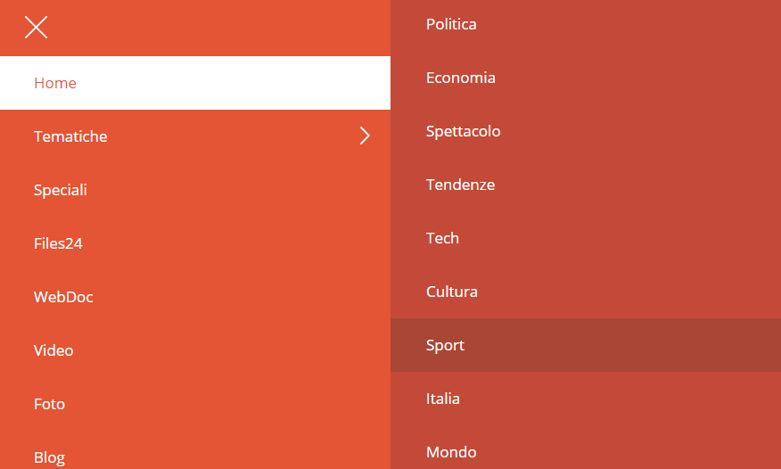

Con rapporto Test con Utenti, o test di usabilità, si intende un processo di valutazione di un prodotto interattivo, svolto tramite un'analisi per comprendere se gli utenti percepiscono l'interfaccia del prodotto in modo efficace, efficiente e soddisfacente in un determinato contesto d'uso.
Dettagli
Autori
Andrea Miotto, Andrea Rizzato, Marco Tonet.
Data di Stesura del Rapporto
20 Giugno 2017
Metodo Seguito
Lo scopo del test è quello di rilevare problemi di usabilità del sito internet RaiNews, attraverso l'intervista di persone arbitrarie. L'esperimento è stato condotto attraverso un test con utenti di tipo informale.
I test sono stati svolti all'interno delle abitazioni dei tre studenti, utilizzando due sistemi operativi diversi (Windows e IOS), come web browsers, invece, Google Chrome e Safari.
Tutti i test sono stati attuati nel periodo di Giugno 2017.
Il tempo medio per ogni utente nello svolgere ogni caso d'uso varia dai 2 minuti fino ai 5 minuti. Il test ha avuto una durata complessiva media di 30 minuti a persona.
Il test è stato eseguito nel modo seguente:
Introduzione all'user testing e specifiche nel trattamento dei dati;
Compilazione del questionario d'introduzione, il cui scopo è quello di raccogliere informazioni inerenti all'utente, come sesso, età, istruzione, etc..;
Compilazione del questionario delle emozioni. Questo questionario serve per definire lo stato emotivo dell'utente prima che esegua il test;
Messa in opera dei vari casi d'uso, prendendo appunti attraverso registrazioni audio e/o su carta;
Compilazione del questionario delle emozioni dopo l'esperimento. Serve per poter monitorare dei cambiamenti emotivi nell'utente;
Intervista finale all'utente, marcando gli aspetti positivi e negativi del sito, eventuali problemi riscontrati durante la navigazione ed eventuali consigli da dare allo sviluppatore del sito.
Casi d'uso analizzati
I casi d'uso presi in considerazione sono quattro:
Notizie Sportive
Cercare un insieme di notizie appartenenti alla categoria dello sport.
Notizie sul Presidente Donald Trump
Cercare un insieme di notizie riguardanti Donald Trump.
Notizie in base ad una data specifica
Cercare notizie pubblicate o riguardanti una singola data.
Condivisione articolo
Condividere un articolo, che interessa all'utente, attraverso un qualsiasi mezzo di condivisione.
Dati Utenti
Il test è stato svolto prendendo in considerazione utenti con età media tra i 21 e i 26 anni, prevalentemente maschi.
Il livello di istruzione si suddivide tra utenti con laurea triennale e utenti con diploma di scuola secondaria superiore.
Nessun utente presenta disabilità motorie o cognitive.
L'esperienza di navigazione degli utenti analizzati è nella media; mentre il loro utilizzo di siti di informazioni è relativamente scarso.
I test, principalmente, si sono svolti all'interno dell'ambiente domestico degli utenti.
Casi d'uso
1. Cercare notizie sportive
Dettagli
Nome: Notizie sportive.
Attori principali e secondari: utente testato.
Obiettivo (motivo): cercare un insieme di notizie appartenenti alla categoria sport.
Precondizione richiesta: trovarsi nella homepage del sito.
Analisi
Sequenza delle azioni svolte dagli attori e dal sistema:
Di seguito sono elencate le azioni più comuni che sono state svolte dagli attori.
Descrizione del percorso (1): dopo una breve ispezione della pagina, l'utente ha trovato il menu hamburger ☰ in alto a sinistra. Cliccandoci sopra e dopo una breve ispezione ha cliccato sulla sezione Tematiche e di conseguenza Sport, raggiungendo il suo obiettivo.
Menu Hamburger.
Menu Hamburger in alto a destra della pagina del sito.
Menu Laterale.

Menu laterale a sinistra con la sezione Sport in focus.
Raggiungimento obiettivo:Raggiunto
Descrizione del percorso (2): dopo una breve ispezione della pagina, l'utente ha provato a cercare le varie notizie dello sport attraverso la barra di ricerca in alto a destra. Questo procedimento non ha permesso all'utente di raggiungere l'obiettivo.
Barra di ricerca.
Ricerca della sezione sport.
Raggiungimento obiettivo:Non raggiunto
Eventuali eccezioni e come devono essere gestite:
Di seguito sono elencate tutte le eccezioni che sono state individuate dagli utenti testati.
Eccezione: il motore di ricerca non funziona adeguatamente. Usando sport come query di ricerca, alcuni utenti pur non aspettandosi notizie solamente sportive si sarebbero aspettati dei risultati migliori.
Gravità:Importante
Possibile soluzione: migliorare il motore di ricerca, magari con la possibilità di aggiungere dei filtri per categorie.
Mobile
Eccezione: L'utente provando ad eseguire il percorso (1) nella versione mobile ha rilevato la mancanza della barra di ricerca nella versione mobile.
Mobile: barra di ricerca mancante.
Nella versione mobile manca la barra di ricerca.
Gravità:Critico
Possibile soluzione: implementare il motore di ricerca nella versione mobile.
Conclusioni
In generale gli utenti si sono ritenuti soddisfatti nel raggiungimento dell'obiettivo.
Alcuni, però, hanno notato una categorizzazione degli articoli un po' troppo superficiale, avrebbero preferito poter scegliere delle categorie più dettagliate. Ad esempio per la categoria Sport poter scegliere tra Calcio, Basket, etc...
Il motore di ricerca è poco utile e nel mobile non compare nemmeno.
2. cercare informazioni su Trump
Dettagli
Nome: Notizie su Trump.
Attori principali e secondari: utente testato.
Obiettivo (motivo): Cercare un insieme di notizie riguardanti Donald Trump.
Precondizione richiesta: trovarsi in una qualsiasi pagina del sito.
Analisi
Sequenza delle azioni svolte dagli attori e dal sistema:
Di seguito sono elencate le azioni più comuni che sono state svolte dagli attori.
Descrizione del percorso (1): L'utente ha selezionato la lente d'ingrandimento, posizionata nel menu di navigazione, aprendo così la barra di ricerca. Nella quale ha poi inserito query del tipo: Trump, Donald Trump. Il motore di ricerca si è bloccato impedendo all'utente il raggiungimento dell'obiettivo.
Barra di ricerca.
Barra di ricerca con query "Trump"
Raggiungimento obiettivo:Non raggiunto
Descrizione del percorso (2): L'utente ha selezionato tra le Tematiche la sezione Mondo. In questa sezione l'utente ha eseguito ripetuti "scroll" verso il basso finchè non ha trovato degli articoli riguardanti Donald Trump.
Menu per sezione Mondo.
Percorso nel nemu di navigazione per la sezione 'Mondo'
Raggiungimento obiettivo:Raggiunto
Eventuali eccezioni e come devono essere gestite:
Di seguito sono elencate tutte le eccezioni che sono state individuate dagli utenti testati.
Eccezione: il motore di ricerca non funziona per la query Trump. Trovata durante il percorso (1).
Gravità:Critico
Possibile soluzione: migliorare il motore di ricerca.
Mobile
Eccezione: L'utente provando ad eseguire il percorso (1) nella versione mobile ha rilevato la mancanza della barra di ricerca nella versione mobile.
Mobile: barra di ricerca mancante.
Nella versione mobile manca la barra di ricerca.
Gravità:Critico
Possibile soluzione: implementare il motore di ricerca nella versione mobile.
Conclusioni
Per gli utenti più esperti il non funzionamento della barra di ricerca ha portato ad un evidente crollo della credibilità e delle aspettative verso il sito.
In generale gli utenti reputano di non aver raggiunto l'obiettivo.
3. Cerca notizie per una data specifica
Dettagli
Nome: Notizie per data specifica.
Attori principali e secondari: utente testato.
Obiettivo (motivo): Cercare notizie pubblicate o riguardanti una singola data.
Precondizione richiesta: trovarsi in una qualsiasi pagina del sito.
Analisi
Sequenza delle azioni svolte dagli attori e dal sistema:
Di seguito sono elencate le azioni più comuni che sono state svolte dagli attori.
Descrizione del percorso (1): l'utente utilizza immediatamente la ricerca interna al sito per inserire la data e quindi per raggiungere l'obiettivo. Gli utenti meno esperti cliccano nuovamente sulla lente d'ingrandimento per avviare la ricerca, ma questo non avvia la ricerca e anzi chiude il campo, con conseguente disappunto da parte dell'utente. Solo a un terzo tentativo l'utente andrà ad utilizzare il tasto invio della tastiera. La ricerca però non va a buon fine, i risultati riportati sono sempre notizie con data a partire da marzo 2017 e vanno a ritroso.
Barra di Ricerca.
Barra di ricerca con query "11 settembre 2001"
Raggiungimento obiettivo:Non raggiunto
Mobile
Descrizione del percorso (2): l'utente cerca il campo di ricerca che su desktop era contraddistinto da una lente di ingrandimento ma non lo trova, per cui rinuncia alla ricerca.
Barra di ricerca in mobile.
Screenshot che mostra l'assenza di una barra di ricerca nel sito mobile.
Raggiungimento obiettivo:Non raggiunto
Eventuali eccezioni e come devono essere gestite:
Di seguito sono elencate tutte le eccezioni che sono state individuate dagli utenti testati.
Eccezione (1): premendo di nuovo sulla lente d'ingrandimento dopo aver scritto la data nel campo di ricerca non si avvia la ricerca ma viene chiuso il campo.
Gravità:Importante
Possibile soluzione: Questo problema è aggirabile tramite l'uso di invio da tastiera, ma comunque mette in difficoltà gli utenti meno esperti.
Eccezione: qualsiasi data venga inserita i risultati forniti partono sempre da marzo 2017 e procedono a ritroso, ma non viene individuata la data ricercata.
Gravità:Critico
Possibile soluzione: migliorare il motore di ricerca interno al sito.
Mobile
Eccezione: il campo di ricerca è completamente assente.
Gravità:Critico
Possibile soluzione: permettere all'utente di usare la ricerca interna al sito anche da mobile.
Conclusioni
Ancora una volta, la gran parte degli utenti è convinta non non aver raggiunti l'obiettivo. Il fatto di cercare degli articoli per una data ed ottenere risultati per date completamente diverse ha prodotto degli immediati effetti negativi nello stato emotivo degli utenti.
4. Condividere un articolo scelto
Dettagli
Nome: Condivisione articolo
Attori principali e secondari: utente testato.
Obiettivo (motivo): Condividere un articolo, che interessa all'utente, attraverso un qualsiasi mezzo di condivisione.
Precondizione richiesta: trovarsi in una qualsiasi pagina del sito.
Analisi
Sequenza delle azioni svolte dagli attori e dal sistema:
Di seguito sono elencate le azioni più comuni che sono state svolte dagli attori.
Descrizione del percorso: l'utente, una volta all'interno dell'articolo interessato, scansiona visivamente la pagina alla ricerca di un modo per condividere l'articolo. In alcune pagine è possible effettuare una condivisione via Facebook, Twitter e Google.
Condivisione tramite social
Pulsanti di condivisione per i social network: Facebook, Twitter e Google+.
In altre pagine invece è possibile anche stampare o inviare via mail l'articolo:
Condivisione tramite mail e stampa
Pulsanti per ingrandire il testo, inviare via mail e stampare l'articolo.
Raggiungimento obiettivo:Raggiunto
Descrizione del percorso: l'utente inesperto non conoscendo social e non utilizzando email propone di fotografare tramite smartphone l'articolo interessato sullo schermo del pc, per poi inviare la foto tramite Whatsapp.
Raggiungimento obiettivo:Raggiunto
Eventuali eccezioni e come devono essere gestite:
Di seguito sono elencate tutte le eccezioni che sono state individuate dagli utenti testati.
Eccezione: i media di condivisione non sono sempre gli stessi per ogni articolo.
Gravità:Minore
Possibile soluzione: Scegliere con quali media permettere la condivisione e garantirli per tutti gli articoli.
Conclusioni
Tutti gli utenti si sono ritenuti soddisfatti nel raggiugnimento dell'obiettivo prefissato. Le eccezioni riscontrate non hanno influito più di tanto sull'esecuzione dell'attività.
Analisi Emozioni
Analizzando i dati raccolti riguardanti le emozioni è interessante notare come, nella maggior parte dei casi, gli utenti di sesso femminile presentino delle differenze considerevoli tra il questionario pre-test e quello post-test.
In particolare si nota come sentimenti negativi come agitazione, ansia, confusione ed altri apparenti a questa sfera subiscano delle variazioni maggiori rispetto a sentimenti neutri o positivi.
In generale si nota come, in seguito al test, gli utenti siano maggiormanti insoddisfatti e irritati.
Conclusioni Finali
Incrociando l'analisi dei percorsi effettuati dagli utenti per raggiungere gli obiettivi richiesti, le eccezioni incontrate, il raggiungimento o meno dell'obiettivo stesso e i dati riguardanti le emozioni dei partecipanti al test, è evidente come l'esperienza di navigazione non sia stata positiva.
In troppi casi gli utenti si sono trovati impossibilitati a raggiungere il risultato che gli era stato richiesto non a causa della loro impreparazione quanto a causa dell'inefficienza del sito:
il motore di ricerca non dispone della correzione automatica degli errori o dei suggerimenti.
i risultati delle ricerce che vengono mostrati non ricprono le aspettative degli utenti.
da mobile è impossibile effettuare una ricerca.
lo stile molto mobile del sito crea difficoltà agli utenti che non sono esperti di navigazione web in ambito mobile. Come nel caso dell'icona del menu.
sono stati riscontrati diversi problemi nel layout e di sovrapposizione degli elementi nelle varie pagine.
non sempre è possibile selezionare la disposizione ad elenco per gli articoli.
Certamente il sito può essere migliorato, sia inserendo un layout specifico per la versione desktop, migliorando quindi la navigazione, che aumentando l'efficienza della ricerca interna al sito.